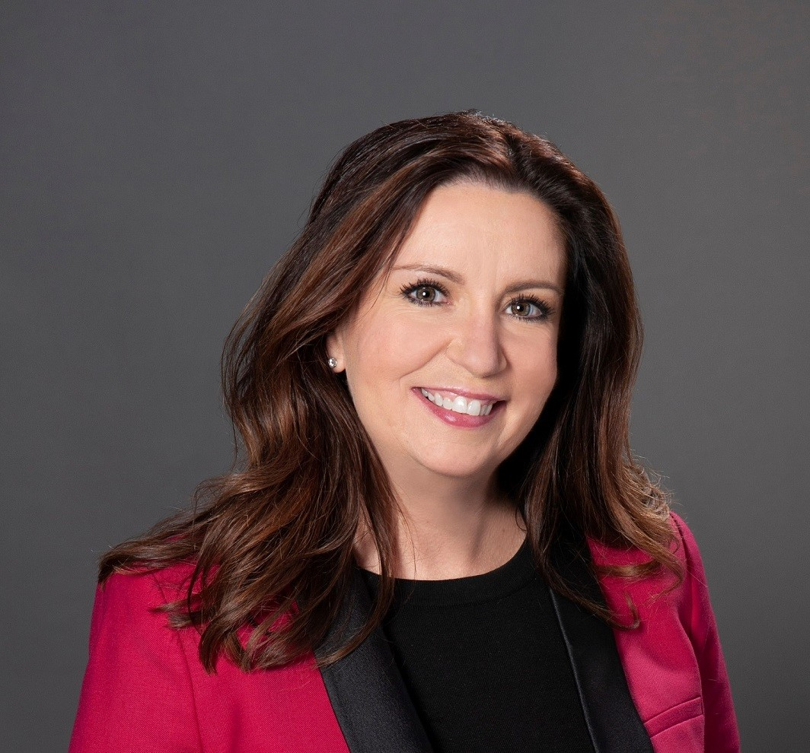

ELIZABETH HUNTER
Can you describe your path to T-Mobile?
During that time, I got a job just to pay my rent as a secretary for a person in the IT department of a power company. He suggested that I pursue a career in IT and explained to me the many facets of IT that existed. I found that working with users and figuring out how to translate what they want into requirements sounded interesting.
He eventually made me his chief of staff for about two and a half years. He then invited me to come work with him at a small wireless company in Oklahoma City where he had been hired as CIO. I worked at that little company for 10 years until it got sold to AT&T. While at that company, I ran our web design, billing system, inner sim management platform, data warehouse, and really all kinds of things. Then I moved to corporate development and learned all the other pieces of how the company functions, so when that company got sold to AT&T, I ran AT&T’s wireless mergers for four years. The last company that AT&T tried to buy was T-Mobile.
Although that deal didn’t go through, about a year later, T-Mobile invited me to run its merger with Metro PCS. After the merger, I came to what's now called the Product and Technology organization at T-Mobile. For the past two years, I have been running the Sprint merger but now that it is wrapping up, I’m back to the Product and Technology organization.

As someone in such a high leadership position at T-Mobile, how do you seperate yourself from work?
My work schedule changed the most when I had kids. I had to intentionally set aside time for them because they're going to realize at some point if I’m not around. I started to set boundaries, like leaving work at 5:30 so that I could get to daycare on time. I like my job but I also realize that at the end of the day, I want to spend more time with my family, I want to spend more time reading and I did go to school for art, so I want to spend more time doing art. Still, it's much easier to talk about than to execute on a day-to-day basis. Working from home definitely hasn’t helped because it's so easy to go on my laptop to check on one email and then, an hour later, I'm still at my computer.
To be honest though, I'm glad that I spent lots of time working when I was younger because, by the time I got to the point of having a family, I was far enough in my career where I could set my boundaries. I was also lucky enough to work for a company that cared about my boundaries as well.
Can you give us an example of a time that you faced unconscious or conscious bias?
The CEO of my company had been in a car accident about a week before we had made this trip and I knew that his back was bothering him so I offered to get him coffee. Then, one of the bankers turns to me and asks if I could get him coffee too as if I was his secretary. I knew that it wasn’t the time to confront him so I brought him his coffee. He thanked me and literally patted me on the shoulder. My CEO had seen what had happened so he leaned over to me and offered to have me run the meeting and of course I said yes. So after opening the meeting, he says, “to go over our proposal, I'm going to turn it over to the Director of Corporate Development Elizabeth Hunter” and all of the blood drained out of the banker’s face. At the time, I didn't realize the significance of what he had done for me. Not only did that moment stick it to that guy's face, but it also helped me be more confident in general.
In my personal experience, that kind of conscious bias happens a lot less now, but the unconscious bias does still happen. Luckily, I work in an environment where constructive criticism on unconscious bias is appreciated and even encouraged.
As a woman in leadership, many people look up to you, who do you look up to?
When I worked at AT&T, it was the first time I had seen women in senior leadership. There was a Senior Vice President, her name was Kris Rinne - she is retired now - but man was she cool. She was a hardcore engineer and you could tell that she was so well-respected in the company. She also reached out and made space for other women by asking for their opinions. She gave me a really good model of what a good female leader looked like. I've learned just as much from her about how to be a good female leader as I did from her technical acumen. Actually, somebody who used to work at AT&T, but now is working at T-Mobile, once said that I was “T-Mobile's Kris”, which was one of the greatest compliments I’ve ever received.